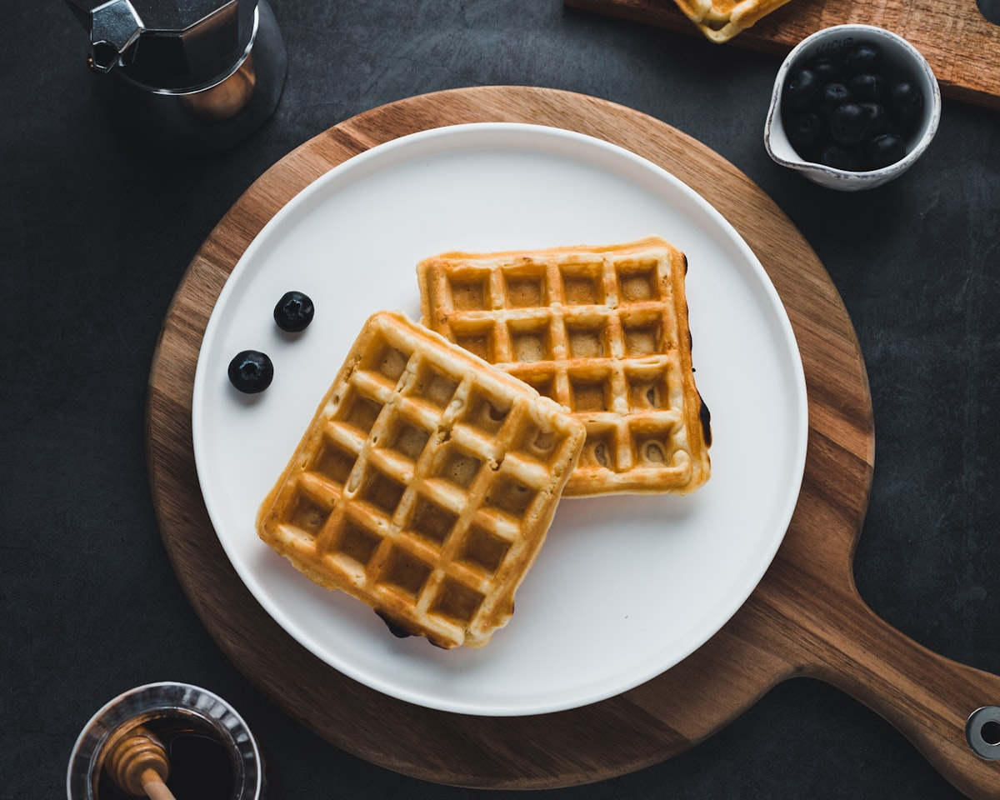

#1 Best SellerBerry Loaded
Our caramelized Liège waffle crowned with fresh strawberries, plump blueberries, rich Nutella hazelnut drizzle, and fresh whipped cream.
Signature Sweet
$9.50
Slow-fermented yeast dough infused with imported Belgian pearl sugar that melts and caramelizes into a crisp, golden shell with a soft, buttery center.
Slow cold fermentation for rich brioche depth and airy structure
Imported beet sugar clusters that melt into golden caramelized crunch
Validated parking for all customers in the 7th Street Station garage
Nestled in Charlotte's historic non-profit culinary food hall

Unlike standard American waffles made from runny pancake-style batter, our Liège waffles begin as a rich, buttery yeast dough akin to brioche. We knead imported Belgian pearl sugar chunks directly into the dough before pressing.
From decadent chocolate and berry stacks to savory local brie pairings.

#1 Best SellerOur caramelized Liège waffle crowned with fresh strawberries, plump blueberries, rich Nutella hazelnut drizzle, and fresh whipped cream.
 Savory Sensation
Savory Sensation
Warm caramelized waffle topped with creamy French Brie from neighboring Orrman's Cheese Shop, crisp hickory bacon crumbles, and spicy hot honey.
The Purist
Pure, unadorned perfection. Golden-brown caramelized pearl sugar crust with a soft, rich vanilla brioche interior. Warm and handheld.

We are proud to call The Market at 7th Street our home. Charlotte's premier urban food incubator brings together local artisans, craft coffee roasters, cheese mongers, and street food creators under one energetic roof.
Everything you need to know about our dough, parking validation, and takeout boxes.
Liège waffles originate from the city of Liège in eastern Belgium. Instead of a liquid batter, they use a yeast-leavened brioche dough enriched with butter, eggs, and Belgian pearl sugar. When pressed on our hot cast-iron irons, the pearl sugar caramelizes into sweet, crunchy pockets that coat the exterior.
Park in the 7th Street Station parking garage (located directly above the market). Bring your parking ticket to our counter when ordering, and we will validate it for up to 90 minutes of complimentary parking.
Yes! We offer 4-pack boxes of our O.G. Classics and Mix & Match specialty waffles. At home, simply pop them into a toaster oven or standard oven at 350 degrees Fahrenheit for 3-4 minutes to re-crisp the caramelized sugar shell.
Our traditional Liège waffles contain real butter, dairy, eggs, and wheat flour essential for authentic brioche fermentation. We offer fresh fruit cups and specialty beverage options for guests with dietary restrictions.